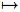

Skolem’s Paradox
Skolem's Paradox involves a seeming conflict between two theorems from classical logic. The Löwenheim-Skolem theorem says that if a first-order theory has infinite models, then it has models whose domains are only countable. Cantor's theorem says that some sets are uncountable. Skolem's Paradox arises when we notice that the basic principles of Cantorian set theory—i.e., the very principles used to prove Cantor's theorem on the existence of uncountable sets—can themselves be formulated as a collection of first-order sentences. How can the very principles which prove the existence of uncountable sets be satisfied by a model which is itself only countable? How can a countable model satisfy the first-order sentence which says that there are uncountably many mathematical objects—e.g., uncountably many real numbers?
Philosophical discussion of this paradox has tended to focus on three main questions. First, there's a purely mathematical question: why doesn't Skolem's Paradox introduce an outright contradiction into set theory? Second, there's a historical question. Skolem himself gave a pretty good explanation as to why Skolem's Paradox doesn't constitute a straightforward mathematical contradiction; why, then, did Skolem and his contemporaries continue to find the paradox so philosophically troubling? Finally there's a purely philosophical question: what, if anything, does Skolem's Paradox tell us about our understanding of set theory and/or about the semantics of set-theoretic language?
- 1. Background
- 2. Mathematical Issues
- 3. Philosophical Issues
- 4. Conclusion
- Bibliography
- Academic Tools
- Other Internet Resources
- Related Entries
1. Background
To understand Skolem's Paradox, we need to start by recalling two theorems from classical logic.[1] The first comes from the late 19th century. In 1873, Georg Cantor formulated a new technique for measuring the size—or cardinality—of a set of objects. Cantor's idea was that two sets should have the same cardinality just in case their members can be put into one-to-one correspondence with each other. So, for instance, the set {1, 2, … , 26} can be put into one-to-one correspondence with the set {A, B, … , Z } via the natural map which relates 1 to A, 2 to B, 3 to C, etc., etc.; similarly, the set of natural numbers can be put into one-to-one correspondence with the set of even numbers via the map: x  2x.
When Cantor applied this conception of cardinality to infinite sets, he came to the initially surprising conclusion that there are different kinds of infinity. There are relatively small infinite sets like the set of even numbers, the set of integers, or the set of rational numbers. These sets can all be put into one-to-one correspondence with the natural numbers; they are called countably infinite. In contrast, there are much “larger” infinite sets like the set of real numbers, the set of complex numbers, or the set of all subsets of the natural numbers. These sets are too big to be put into one-to-one correspondence with the natural numbers; they are called uncountably infinite. Cantor's Theorem, then, is just the claim that there are uncountably infinite sets—sets which are, as it were, too big to count as countable.[2]
Our second theorem comes from the early 20th century. In 1915, Leopold Löwenheim proved that if a first-order sentence has a model, then it has a model whose domain is countable.[3] In 1922, Thoralf Skolem generalized this result to whole sets of sentences. He proved that if a countable collection of first-order sentences has an infinite model, then it has a model whose domain is only countable. This is the result which typically goes under the name the Löwenheim-Skolem Theorem. Before moving on, it is useful to mention three, somewhat more refined, versions of this theorem.[4]
Let T be a countable collection of first-order sentences and let A be an infinite set. The Upward Löwenheim-Skolem Theorem says that if T has any infinite model, then T has a model whose domain has the same size as A (indeed, we can assume without loss of generality that the domain of this second model just is A).[5] The Downward Löwenheim-Skolem Theorem says that if N is a model of (infinite) cardinality κ and if λ is an infinite cardinal smaller than than κ, then N has a submodel of cardinality λ which satisfies exactly the same sentences as N itself does.[6] Finally, the Transitive Submodel Theorem strengthens the downward Löwenheim-Skolem theorem by saying that if our initial N happens to be a so-called transitive model for the language of set theory, then the submodel generated by the downward theorem can also be chosen to be transitive.[7]
Return, now, to the original version of the Löwenheim-Skolem theorem—the one which simply claimed that any theory which has an infinite model also has a model which is countably infinite. Skolem's Paradox arises when we notice that the standard axioms of set theory can themselves be formulated as (countable) collection of first-order sentences. If these axioms have a model at all, therefore, then the Löwenheim-Skolem theorem ensures that they have a model with a countable domain.[8] But this seems quite puzzling. How can the very axioms which prove Cantor's theorem on the existence of uncountable sets be satisfied by a model which is itself only countable? How can a countable model satisfy the first-order sentence which “says that” there are uncountably many things?
These questions can be made somewhat more concrete by considering a specific case. Let T be a standard, first-order axiomatization of set theory. (For convenience, this entry will focus on the case where T is ZFC, but any standard axiomatization of set theory would do equally well.) On the assumption that T has a model, the Löwenheim-Skolem theorems ensure that it has a countable model. Call this model M. Now, as T ⊢ ∃x “x is uncountable,” there must be some mˆ ∈ M such that M ⊨ “mˆ is uncountable.” But, as M itself is only countable, there are only countably many m ∈ M such that M ⊨ m ∈ mˆ On the surface, then, we seem to have a straightforward contradiction: from one perspective, mˆ looks uncountable, while from another perspective, mˆ is clearly countable.
This, then, gives us a fairly simple formulation of Skolem's Paradox. Before turning to look at this paradox's solution, a point about motivation is probably in order. From one perspective, there's nothing especially surprising about the fact that a particular model fails to accurately capture every feature of the reality of which it is a model. A mathematical model of a physical theory, for instance, may contain only real numbers and sets of real numbers, even though the theory itself concerns, say, subatomic particles and regions of space-time. Similarly, a tabletop model of the solar system will get some things right about the solar system while getting other things quite wrong. So, for instance, it may get the relative sizes of the planets right while getting their absolute sizes (or even their proportional sizes) wrong; or it may be right about the fact that the planets move around the sun, while being wrong about the mechanism of this motion (e.g., the planets don't really move around the sun because some demonstrator turns a crank!). Given all this, it may be unclear why we should even expect first-order models of set theory to accurately capture the distinction between countable and uncountable sets. Hence, it may be unclear why we should even think that Skolem's Paradox looks paradoxical in the first place.
Although we'll say more about this kind of issue later (see especially sections 2.1 and 3.1), a few preliminary remarks are appropriate here. First, it's important to note that there are some set-theoretic concepts which first-order models do capture quite precisely. As we'll see in section 3.1, first-order models capture finite cardinality notions—e.g., “x is empty,” “x has two members,” “x has seventeen members,” etc.—quite nicely.[9] If we allow ourselves to use infinitely many formulas, then we can also capture the more-general notion “x is infinite.”[10] Finally, if we fix our understanding of membership—i.e., if we restrict our attention to models which use the real membership relation to interpret the symbol “∈”—then we can also capture the general notion “x is finite.”[11]
Given all this, Skolem's Paradox shows that the line between countable and uncountable sets is, in a fairly deep sense, the first place where our model theory loses the ability to capture cardinality notions. This fact helps to explain why Skolem's Paradox may continue to look paradoxical even after we've absorbed the general points about models and model theory which were presented in the second-to-last paragraph. In short: it's the very fact that we can capture so many of the cardinality notions which live, as it were, below the countable/uncountable distinction which makes our sudden inability to capture the countable/uncountable distinction itself so initially surprising.
Second, Skolem's Paradox does not depend on the specific axiomatization of set theory that we happen to be working with. Any first-order axiomatization of set theory can have the Löwenheim-Skolem theorems applied to it, so every such axiomatization is subject to Skolem's Paradox. This means, in particular, that we can't resolve the paradox by simply choosing a new axiomatization of set theory (or adding some new axioms to the axiomatization that we're already using). The fact that Skolem's paradox is, in this way, intrinsic to the first-order context—that it is an inescapable fact about first-order axiomatizations of set theory—is another reason why Skolem's Paradox may seem so initially puzzling.
This, then, gives us a first pass at formulating Skolem's Paradox. In the next section, we explain why this simple version of the paradox doesn't constitute a genuine contradiction, and we look at several more-refined formulations of the paradox. In section 3, we turn to historical and philosophical issues. Section 3.1 looks at Skolem's own understanding of his paradox. Sections 3.2–3.4 look at some more-recent attempts to argue that, even though the paradox doesn't constitute a genuine mathematical contradiction, it still tells us something philosophically important about the nature of our understanding of set theory.
2. Mathematical Issues
In an introduction to the 1922 paper where Thoralf Skolem first presented Skolem's Paradox, Jean van Heijenoort writes that the paradox “is not a paradox in the sense of an antinomy … it is a novel and unexpected feature of formal systems.”[12] This comment reflects the general consensus on Skolem's Paradox within the mathematical community. Whatever philosophical problems the paradox is supposed to engender, it just doesn't constitute a problem for mathematics.
To understand why the paradox doesn't constitute a problem for mathematics we need to ask two questions. In the simple formulation of the paradox given above, we noted that there's a specific mˆ ∈ M such that M ⊨ “mˆ is uncountable.” Literally, of course, this isn't quite right. What we really mean here is that there's a rather complicated formula in the language of formal set theory—a formula which mathematicians sometimes find it convenient to abbreviate with the English expression “x is uncountable”—and that M satisfies this particular formula at mˆ. For convenience, let's denote the relevant formula by “Ω(x).” Then we can rephrase the fact mentioned above by saying that M ⊨ Ω[mˆ].[13] Our two questions, then, are these:
- Why is it so natural to abbreviate Ω(x) by “x is uncountable”? Why, in particular, would anyone even think that the fact that M ⊨ Ω[mˆ] entails that mˆ is uncountable?
- Why doesn't the fact M ⊨ Ω[mˆ] really entail that mˆ is uncountable?
In effect, the first of these questions asks whether Skolem's Paradox is simply an artifact of our abbreviations, an artifact which would disappear if Skolem's Paradox were formulated more carefully and perspicuously. Assuming that it wouldn't so disappear, the second question asks for a more-detailed explanation of how the paradox can really be dissolved.
2.1 The Appearance of Paradox
There are two ways to approach the first question. On the one hand, we could start with the formula Ω(x), and give this formula what we might call its “ordinary English” interpretation. This is the interpretation which lets “∈” refer to the real set-theoretic membership relation, which lets “∀” and “∃” range over the whole (real) set-theoretic universe, and which interprets “=” and the propositional connectives in the usual manner.[14] Then for any set m, Ω(m) will come out true if and only if m is uncountable.[15] This shows that there is at least one interpretation of Ω(x) under which this formula really does capture—at least from an extensional perspective—the ordinary mathematical notion of uncountability. So, there's at least one interpretation under which Ω(mˆ) really does say that mˆ is uncountable.
On the other hand, we could start, not with the formula Ω(x), but with the ordinary English sentence “x is uncountable.” If asked what this sentence means, a set theorist will say something about the lack of a bijection between x and the natural numbers.[16] If asked about the phrase “is a bijection,” she will go on to talk about collections of ordered pairs satisfying certain nice properties, and if asked about the term “ordered pair,” she will say something about the ways one can identify ordered pairs with particular sets. If she takes this process far enough—and if she saves herself some time by using symbols like ¬ and ∃y as abbreviations for “not” and “there exists a set y such that”—then she will eventually obtain a detailed explication of “x is uncountable” which looks just like the formula Ω(x). That is, if we simply compare the syntax of her explication of “x is uncountable” with the syntax of Ω(x), then we will find that these two expressions contain exactly the same symbols in exactly the same order.[17] Once again, therefore, we find that there's a real, if a somewhat superficial, similarity between Ω(x) and “x is uncountable”—a similarity which remains even after we stop using “x is uncountable” as a straightforward abbreviation for Ω(x), and a similarity which explains why even a perspicuously formulated version of Skolem's Paradox may continue to look somewhat puzzling.
These, then, are two ways of thinking about the relationship between Ω(x) and “x is uncountable.” Together they explain why it's so natural for mathematicians to use “x is uncountable” as an abbreviation for Ω(x) and (so) why someone might be inclined to think that the fact that M ⊨ Ω[mˆ] should entail that mˆ is uncountable. They also bring us back to our second question: why doesn't the fact that M ⊨ Ω[mˆ] really entail that mˆ is uncountable.
2.2 A Generic Solution
To answer this second question, it's useful to begin by comparing the ordinary English interpretation of Ω(x)—the one introduced three paragraphs ago and the one which really does entail that x is uncountable—with the model-theoretic interpretation of Ω(x) that's given by M and ⊨. Clearly, it's this latter, model-theoretic interpretation which is most relevant to understanding the fact that M ⊨ Ω[mˆ]. Further, it's only if this model-theoretic interpretation is pretty closely tied to the ordinary English interpretation—and so, derivatively, to the ordinary English expression “x is uncountable”—that we will have any real grounds for believing that the fact that M ⊨ Ω[mˆ] should entail that mˆ is uncountable.
Fortunately, even a rough description of the model-theoretic interpretation is enough to show that no such “close ties” exist. The model-theoretic interpretation is obtained by letting the significance of “∈” be fixed by the interpretation function of M, letting the quantifiers in Ω(x) range over the domain of M, and letting the significance of “=” and the propositional connectives be fixed by the recursion clauses in the the definition of first-order satisfaction. This description highlights two immediate differences between the model-theoretic interpretation and the ordinary English interpretation.
First, the model-theoretic interpretation understands “∈” to refer to whatever binary relation on M happens to fall under the interpretation function of M; in contrast, the ordinary-English interpretation of Ω(x) understands “∈” to refer to the real set-theoretic membership relation. But there is no reason to think that these two understandings agree with each other. We can find cases were M ⊨ m1 ∈ m2, despite the fact that neither m1 nor m2 are even sets (indeed, as far as the model theory is concerned, m1 and m2 could both be cats, or rabbits, or hedgehogs, or …).[18] Further, even when all of the elements in M are sets, this provides no guarantee that the model-theoretic understanding of “∈” will agree with the ordinary English understanding. We can find a case where m1 and m2 are genuine sets, but where M ⊨ m1 ∈ m2, despite the fact that m1 is not really a member of m2; similarly, we can find a case where M ⊨ m1 ∉ m2, despite the fact that m1 really is a member of m2 (and where, once again, m1 and m2 are genuine sets).[19]
Second, the model-theoretic interpretation understands “∃x” and “∀x” to range only over the domain of M, while the ordinary English interpretation understands these quantifiers to range over the whole set-theoretic universe. Clearly, these two understandings are quite different. Further, the differences in question are pretty closely related to the sorts of sets that are involved in Skolem's Paradox. Suppose, for instance, that M ⊨ “mˆ is the set of real numbers.” Then a simple cardinality argument shows that there are 2ℵ0 real numbers which do not live in the domain of M (and so, in particular, which do not live in {m | M ⊨ m ∈ mˆ }). Hence, there's a real difference between the genuinely uncountable set ℜ and the merely countable set {m | M ⊨ m ∈ mˆ }—between, that is, the real set of real numbers and the set of things which M merely thinks are real numbers. On the model-theoretic interpretation of Ω(x), the quantifiers only range over the latter, smaller set, while on the ordinary English interpretation, they range over the entire, larger set. Similarly, suppose that M ⊨ “m is infinite.” Then we can show that there are exactly 2ℵ0 bijections f : ω → {m′ ∈ M | M ⊨ m′ ∈ m }.[20] However, at most countably many of these bijections live in the domain of M. Hence, only countably many of them are “seen” by ∃x and ∀x under the model-theoretic interpretation of Ω(x), although all 2ℵ0 of them are “seen” under the ordinary English interpretation.
Taken together, these results suggest that Skolem's Paradox may simply turn on a surreptitious slide between two different interpretations of Ω(x). Given a countable model for ZFC, it's the model-theoretic interpretation of Ω(x) which allows us to find an element mˆ ∈ M such that M ⊨ Ω[mˆ]. But it's only the ordinary-English interpretation which provides us with any real grounds for thinking that Ω(mˆ) entails that mˆ is uncountable. Further, and as we have just seen, there are enough differences between the model-theoretic interpretation and the ordinary English interpretation to make us suspicious of any facile slide between the two (even if we didn't know that this slide would eventually lead us all the way to Skolem's Paradox). In particular, then, we should resist any attempt to move directly from the fact that M ⊨ Ω[mˆ] to the claim that mˆ is uncountable.
In effect, this analysis treats Skolem's paradox as a straightforward case of equivocation. There's one interpretation of Ω(mˆ) under which this formula really does entail that mˆ is an uncountable set; there's another—quite different—interpretation which ensures that M ⊨ Ω[mˆ]; Skolem's Paradox depends on confusing these two interpretations. In principle, we should be no more surprised to find that this confusion leads us astray then we are to find that our direct deposits aren't buried in the local riverbank. Indeed the model-theoretic case may be a bit worse than the banking case: you could get lucky and find buried treasure while digging in the riverbank, but it's a straightforward theorem that if M is countable, then {m | M ⊨ m ∈ mˆ } is also countable.
This, then, gives us a fairly simply solution to Skolem's Paradox. It's a solution which explains why most mathematicians don't find the paradox very troubling, and it's also a fairly popular solution in the philosophical literature. It is, for instance, essentially the solution that Skolem himself gave back in 1922 (Skolem 1922), and variants of this solution have appeared in more recent discussions of the paradox (Resnik 1966; Myhill 1967; Hart 1970; McIntosh 1979; Benacerraf 1985; Shapiro 1991; Giaquinto 2002). It also appears in a number of recent introductory textbooks (Shoenfield 1967; Kleene 1967; Fraenkel et al. 1984; Ebbinghaus et al. 1994; van Dalen 1997).2.3 Transitive Submodels
Before turning to examine some of the more-purely philosophical issues concerning Skolem's Paradox, a few further points about the paradox's mathematics are in order. First, in order to get a better feel for how the differences between the model-theoretic and the ordinary English interpretations of Ω(x) actually give rise to Skolem's Paradox, it's worth tracking these differences through a slightly more refined version of the paradox. We say that a set X is transitive if every member of X is a set, and every member of a member of X is also a member of X (so, y ∈ x ∈ X ⇒ y ∈ X). We say that a model for the language of set theory is transitive if the model's domain is a transitive set and the model's “membership” relation is just the real membership relation restricted to the model's domain (so, for any m1, m2 ∈ M, m1 ∈ m2 ⇔ M ⊨ m1 ∈ m2). Then, as noted in section 1, the Transitive Submodel Theorem says that if we start with any transitive model of ZFC, then we can find a transitive model whose domain is countable (indeed, we may assume that this countable model is a submodel of the model with which we started).
Suppose, then, that M is a countable transitive model of ZFC. This has two effects on the analysis of Skolem's Paradox given in the last section. First, it ensures that the model-theoretic and the ordinary English interpretations of Ω(x) agree on the interpretation of “∈”: for m1, m2 ∈ M, M ⊨ m1 ∈ m2 if and only if m1 really is a member of m2.[21] In this case, therefore, the explanation of Skolem's Paradox has to involve the interpretation of the quantifiers. Second, the fact that M is transitive ensures that M gets more than just membership right. In particular, if f and m live in the domain of M, then M ⊨ “f : ω → m is a bijection” if and only if f really is a bijection between the natural numbers and m.[22]
Together, these facts help us to isolate what's really going on in the transitive submodel version of Skolem's Paradox. Consider again the formula we've been calling Ω(x). This formula has the form:
Ω(x) ≡ ¬∃f “f : ω → x is a bijection”
Under its ordinary English interpretation, this formula says that the set-theoretic universe doesn't contain any bijections between the natural numbers and x. In particular, Ω(mˆ) says that there is no bijection between the natural numbers and mˆ. In contrast, the model theoretic interpretation of Ω(mˆ)—the one which is relevant to the fact that M ⊨ Ω[mˆ]—says only that the domain of M doesn't contain any bijections between the natural numbers and mˆ.[23] Clearly, these two interpretations have the potential to come apart.
And in the case of Skolem's Paradox, they actually do come apart. Since M is countable, the set mˆ = {m | M ⊨ m ∈ mˆ } must also be countable. So, there really does exist a bijection (indeed, 2ℵ0 bijections), f : ω → mˆ. On the ordinary English interpretation of Ω(mˆ), the quantifiers “see” these bijections, and so Ω(mˆ) comes out false. What Skolem's Paradox shows is that M itself does not contain any such bijections. Hence, the quantifiers in the model-theoretic interpretation of Ω(mˆ) don't see any bijections between ω and mˆ, and so Ω(mˆ) comes out true. In this case, then, differences in the ways the model-theoretic and ordinary English interpretations of Ω(x) handle the quantifiers provide a perfectly natural explanation of what's going on in Skolem's Paradox.
This transitive submodel version of the paradox has been widely discussed in the literature (McIntosh 1979; Benacerraf 1985; Wright 1985; Tennant and McCarty 1987). Indeed, several authors have suggested that transitivity may be necessary to formulate a philosophically significant version of the paradox (Benacerraf 1985; Wright 1985). See Tennant and McCarty 1987 for some objections to the latter view.
2.4 ZFC, Power Sets, and Real Numbers
The analysis of sections 2.2–2.3 explains in general terms how a countable model can satisfy a formula like Ω(x) at a particular element. But it may still leave an obvious question unanswered: how can a countable model of ZFC satisfy such a formula? Granted that an arbitrary model can interpret a formula like Ω(x) in a peculiar manner—how can a model satisfy all of the axioms of set theory while still maintaining this peculiar interpretation? Shouldn't the fact that M satisfies ZFC ensure that M also gets basic set-theoretic notions like countable and uncountable correct?
The short answer to these questions is this: countable models “misinterpret” the axioms of set theory just as badly as they misinterpret the formula Ω(x). For the moment, let's stick with the assumption that M is transitive and consider the power set axiom:[24]
∀x ∃y ∀z [z ⊆ x ↔ z ∈ y ]
On its ordinary English interpretation, this axiom says that every set has a power set—a set which contains all and only the subsets of the set with which we began.[25] On its model-theoretic interpretation, however, the axiom says something much weaker. For any X ∈ M, the axiom ensures that we can find a Y ∈ M which contains exactly those subsets of X which also live in M (so, Y = { Z | Z ⊆ X ∧ Z ∈ M }). But if X is infinite, then most of the subsets of X won't live in the domain of M (since, after all, there are 2ℵ0 subsets of X, while the domain of M is only countable). So, the Y generated by the model-theoretic interpretation of the power set axiom will be much smaller than the real power set of X (Fraenkel et al. 1984; Tennant and McCarty 1987; Shapiro 1991; Hallett 1994; Giaquinto 2002; Bays 2007a).
In this case, then, differences in the ways the model-theoretic and the ordinary English interpretations of the power set axiom handle the initial ∀z-quantifier—and, in particular, differences concerning which subsets of X get “seen” by this quantifier—explain how a countable model can satisfy an axiom which is “supposed to” generate an uncountable set. And this kind of phenomena is fairly general. In Resnik 1966, Michael Resnik tracks this phenomena through the case of the real numbers. As before, assume that M is a countable transitive model of ZFC.[26] Then there will be a particular R ∈ M such that, modulo some abbreviations,
M ⊨ “R is the set of real numbers.”
Resnik notes that, even though M satisfies this formula, R doesn't really contain all the real numbers—it only contains those real numbers which happen to live in the domain of M.[27] So, the mere fact that R is countable doesn't, in any interesting sense, generate a paradoxical situation in which the set of all real numbers is also countable.
Taken together, these examples highlight a crucial fact: the “misinterpretations” which explained how a countable model can satisfy a sentence like Ω(mˆ ) are actually fairly systematic. They also explain how these models can satisfy sentences like “R is the set of real numbers” or “Y is the power set of ω”; and they even explain how these models can satisfy the axioms of set theory (e.g., the power set axiom). When enough of these misinterpretations get put together, they jointly explain how it's possible for a countable model to both satisfy the axioms of set theory and, at the same time, maintain the peculiar interpretation of Ω(x) that we discussed in sections 2.2–2.3. In the end, then, while the Löwenheim-Skolem theorem may still be interesting technical fact—“a novel and unexpected feature of formal systems,” in van Heijenoort's words—Skolem's Paradox itself should no longer appear very paradoxical.
2.5 Four Final Points
We close this discussion of the mathematical side of Skolem's Paradox with four final points. First, the discussion in 2.3–2.4 focused on the transitive submodel case of Skolem's Paradox. This case is relatively straightforward to analyze, and (so) it's the case that's been most widely discussed in the literature. But it can also be somewhat misleading. Much of the analysis of 2.3–2.4 turned on the fact that transitive models get a lot of things “right” about the set-theoretic universe (membership, bijections, real numbers, etc.). Most importantly, if M is transitive and m ∈ M, then m = {m′ ∈ M | M ⊨ m′ ∈ m }.
If M is not transitive, however, then nearly all of this falls apart. Bays has argued that there are versions of Skolem's Paradox which turn solely on the way certain non-transitive models interpret a few specific instances of the membership relation in Ω(x) (Bays 2007a, sections 4–5). Similar points would carry over to our discussion of power sets and real numbers in section 2.4. We can, for instance, find a countable model of ZFC which contains the whole set of real numbers as a member—the model remains countable only because ℜ ≠ {m | M ⊨ m ∈ ℜ} (Benacerraf 1985; Bays 2007a, section 1). In short, although the generic explanation of Skolem's Paradox that was given in section 2.2—the one which simply notices that there are some differences between the model-theoretic and the ordinary English interpretations of Ω(x) and then chalks Skolem's Paradox up to some kind of equivocation between these two interpretations—continues to hold up when we move to non-transitive models, the more-detailed analyses of 2.3–2.4 all break down. In the general non-transitive case, therefore, the analysis of section 2.2 may be the best we can do in giving an explanation of Skolem's Paradox (which is not to say that we can't give more-detailed explanations in the context of any particular non-transitive model).
This brings us to a second point. Skolem's Paradox depends crucially upon the fact that we're using a first-order axiomatization of set theory. More precisely, it depends upon the fact that we're using first-order model theory to interpret this axiomatization. In 1930, Zermelo proved that (second-order) models of second-order ZFC compute cardinalities and power sets correctly.[28] In particular, then, if M is a model for second-order ZFC and if mˆ ∈ M, then M ⊨ “mˆ is uncountable” if and only if {m | M ⊨ m ∈ mˆ } really is uncountable. Hence, Skolem's Paradox doesn't arise in the second-order context (Zermelo 1930; Shapiro 1991).
This second point shows that Skolem's Paradox goes away if our logic is strong enough. The third point shows that weakening our logic has a similar effect. In Tennant and McCarty 1987, Tennant and McCarty show that standard proofs of the Löwenheim-Skolem theorem fail in constructivist set theory, and they argue that the theorem itself is probably constructively invalid.[29] This means that there's no way to generate Skolem's Paradox from within the framework of constructivist mathematics. For constructivists, therefore, as for those who are willing to countenance second-order axiomatizations of set theory, Skolem's paradox simply doesn't arise.
Together, these last two points highlight just how central classical first-order logic is to Skolem's Paradox. From a mathematical standpoint, this shouldn't be all that surprising. Lindstrom has shown that the Löwenheim-Skolem theorems play a key role in characterizing first-order logic itself (Lindström 1966; Lindström 1969; Ebbinghaus 2007). Given this, it should be unsurprising that the puzzle that's most closely associated with these theorems also turns out to be tied pretty closely to the peculiarities of the first-order situation. Although, as we've seen, the paradox doesn't constitute a straightforward mathematical contradiction, it does help us to understand the nature and limits of classical first-order logic.
This brings us to a final point. The above discussion explains why those of us who are willing take a naively realistic attitude towards the language of set theory—e.g., those of us who have no qualms about expressions like “the ordinary English interpretation of Ω(x)”—should remain untroubled by Skolem's Paradox. It's important to emphasize that this analysis also explains why Skolem's Paradox doesn't introduce contradictions into various forms of axiomatized set theory, even when these axiomatizations are themselves understood formalistically or model-theoretically. From a proof-theoretic standpoint, for example, there is a difference between unrelativized quantification and quantification which has been explicitly relativized to some formula in our language (where this formula is one that, from an intuitive perspective, serves to “pick out” the domain of countable model of ZFC). So, there's no a priori reason to think that a sentence with unrelativized quantifiers will conflict with that sentence's fully-relativised counterpart.[30] Similarly, from a model-theoretic perspective, there is a difference between quantifiers which range over the whole domain of a model and quantifiers which only range over the “elements” of some particular member of the model (where, once again, this member is one which the larger model “thinks” is a model of ZFC). So, although the naive realism of sections 2.1–2.4 is useful for expository purposes, it's not essential to the underlying analysis of Skolem's Paradox.
3. Philosophical Issues
The last section explained why Skolem's Paradox does not constitute a problem for mathematics. This, of course, has not kept philosophers from arguing that the paradox does constitute a problem for philosophy. In this section, we explore several attempts to derive philosophical conclusions from the mathematics surrounding Skolem's Paradox. Before doing so, however, two cautionary notes are in order. First, many of the more provocative discussions of Skolem's Paradox are quite brief—amounting to little more than suggestive comments made in passing. Hence, much of the discussion of these comments will have to be somewhat conjectural. Second, many critical discussions of Skolem's Paradox have focused simply on working carefully through the paradox's mathematics and then explaining why the paradox doesn't constitute a genuine mathematical contradiction. Since this material was already covered in section 2, we won't say any more about these issues in this section.
3.1 Skolem's Views
In the 1922 paper where he originally presented Skolem's Paradox, Skolem used the paradox to argue for two philosophical conclusions: that set theory can't serve as a “foundation for mathematics” and that axiomatizing set theory leads to a “relativity of set theoretic notions” (Skolem 1922). These claims, and Skolem's arguments for them, have attracted considerable attention in the literature. Unfortunately, Skolem's paper is quite compressed, and so it's difficult to determine exactly what these claims were really supposed to amount to. At present, there are three interpretations of Skolem's paper which have some currency in the philosophical literature.
Let's begin with Skolem's claim that axiomatizing set theory leads to a relativity of set-theoretic notions. One way to understand this claim is to view it against the backdrop of what we might call an algebraic or model-theoretic conception of axiomatization. On this conception, the axioms of set theory serve to characterize—or perhaps even to implicitly define—basic set-theoretic notions like set, membership and set-theoretic universe. So, a set-theoretic universe is simply a model for the axioms of set theory, a set is simply an element in some set-theoretic universe, and membership just refers to whatever binary relation a particular universe uses to interpret the symbol “∈.” On this conception of axiomatization, then, the axioms of set theory should not be seen as attempts at describing—or even partially describing—some antecedently given “intended model” of set theory; instead, the intended models of set theory are simply those models which happen to satisfy our initial collection of set-theoretic axioms.[31]
We should emphasize, here, that this algebraic conception of axiomatization would have been quite familiar to mathematicians working at the time Skolem wrote his 1922 paper. Skolem himself was trained in Schröder's algebraic school of logic, so this would have been the natural way for him to think about axioms. But even people who weren't trained in Schröder's school would have found the conception familiar. It's the conception which lay behind Hilbert's famous axiomatization of geometry (about which Hilbert reputedly claimed, somewhat notoriously, that we can replace points, lines, and planes with tables, chairs, and beer mugs as long as the latter objects stand in the right kinds of relations). It's also the conception which lay behind the 19th-century results that arithmetic and analysis can be given categorical (second-order) axiomatizations. Finally, and most importantly, it's the conception of axiomatization which Skolem attributes to Zermelo in the very paper that we're currently discussing, and so it's the conception of Zermelo's axioms that Skolem is primarily concerned with criticizing.[32]
Given this algebraic conception of axiomatization, then, Skolem appeals to the Löwenheim-Skolem theorems to argue that the axioms of set theory lack the resources to pin down the notion of uncountability. Given any first-order axiomatization of set theory and any formula Ω(x) which is supposed to capture the notion of uncountability, the Löwenheim-Skolem theorems show that we can find a countable model M which satisfies our axioms. As in section 1, therefore, we can find an element mˆ ∈ M such that M ⊨ Ω(mˆ) but {m | M ⊨ m ∈ mˆ } is only countable. Thus, as long the basic set theoretic notions are characterized simply by looking at the model theory of first-order axiomatizations of set theory, then many of these notions—and, in particular, the notions of countability and uncountability—will turn out to be unavoidably relative.[33]
This, then, provides the content of Skolem's claim that axiomatizing set theory leads to a relativity of set-theoretic notions. It is important, here, to distinguish this claim from a more trivial claim which Skolem might be thought to be making. From one perspective, the algebraic conception of axiomatization leads to an obvious form of relativity: the elements which count as sets in one model may not count as sets in another model, the membership relation of one model may be different than the membership relation of another model, and this latter difference in membership relations may hold even if the two models happen to share the same domain. On this trivial notion of relativity, therefore, almost everything turns out to be relative, even simple notions like “x is the empty set” or “x is a singleton.” After all, an object could be a “singleton” in one model while being a “doubleton” in another model, or it could be “the empty set” in one model while being omitted entirely from another model's domain.
It's important to emphasize that Skolem's own notion of relativity is more sophisticated than this. Let's grant that the specific element which serves as “the empty set” will not remain constant as we move from one model of set theory to another—with the empty set in the first model becoming, perhaps, a singleton in the second. Nonetheless, we can still use a formula in the language of set theory to capture the notion “x is the empty set” in an essentially absolute way. In any model of our axioms, an element mˆ ∈ M will satisfy the open formula “∀y y ∉ x” if and only if the set {m | M ⊨ m ∈ mˆ } is really empty. Hence, there's at least a sense in which we can still capture the notion “x is the empty set” from within the algebraic framework. And this point extends more widely—a similar argument would apply to notions like “x is a singleton” or “x has seventeen members.” Even on the algebraic conception of axiomatization, therefore, there are some set-theoretic notions which we can still pin down pretty precisely. What the Löwenheim-Skolem theorems show is that, no matter how rich our (first-order) set-theoretic axioms may be, we cannot use this kind of technique to pin down the notion “x is uncountable.” This is the result which lies behind all of Skolem's talk about “relativity,” and it's a result which highlights a genuine weakness in the algebraic approach to set-theoretic axiomatization.[34]
To summarize, then, the upshot of this discussion is this: if we take a purely algebraic approach to the axioms of set theory, then many basic set-theoretic notions—including the notions of countability and uncountability—will turn out to be relative. In Skolem's words: “axiomatizing set theory leads to a relativity of set-theoretic notions, and this relativity is inseparably bound up with every thoroughgoing axiomatization” (Skolem 1922, p. 296). Of course, this still leaves open the question of whether these notions are, as it were, absolutely relative—of whether there is some other, non-algebraic and non-thoroughgoing, way of understanding our axioms which does not lead to the sort of relativity we've just been discussing. It's when we turn to this latter question that the various interpretations of Skolem's paper begin to come apart.
The most traditional interpretation of the paper sees Skolem as mounting a straightforward attack on set theory. Skolem starts his paper by noting that the classical set-theoretic paradoxes should lead us to be skeptical of informal understandings of set theory—of “naive reasoning with sets,” to use Skolem's own expression. Given this, our only real option is to fall back on some form of axiomatized set theory, and the only respectable way to understand our axioms is algebraically (since understanding them intuitively would amount to falling back into our previously discredited naiveté). But Skolem's Paradox shows that set-theoretic notions are relative on the algebraic conception of axiomatization. So, these notions are really relative. In short: the classical paradoxes show that the algebraic conception of set theory is the best conception we've got, and so Skolem's Paradox shows that set-theoretic notions are unavoidably relative. This traditional reading of Skolem is quite prevalent in the folklore; variants of it are discussed in Hart 1970, McIntosh 1979, Muller 2005, and Bellotti 2006.
The second interpretation focuses on Skolem's claim that set theory cannot provide an adequate foundation for mathematics. In particular, Skolem thinks that set theory lacks the resources to provide a foundation for ordinary arithmetic—on his view, arithmetic is “clear, natural and not open to question,” while set theory itself is far more problematic. To show that set theory is problematic, Skolem runs through a number of different ways of interpreting set theory—naive set theory, axiomatized set theory construed proof-theoretically, axiomatized set theory construed algebraically, etc.—and he argues that each of these understandings of set theory is inadequate for foundational purposes. On this reading, then, Skolem's Paradox plays only a modest role in Skolem's overall argument. It serves to highlight some problems with one particular conception of set theory (the algebraic conception), but it plays no role in Skolem's arguments against other conceptions of set theory. Further, these other arguments do not show—or even purport to show—that the various non-algebraic conceptions of set theory lead to any kind of relativity (although they do, of course, have other problems which render them unsuitable for foundationalist purposes).[35] Versions of this foundationalist reading of Skolem's paper can be found in George 1985 and Benacerraf 1985; see Jané 2001 for some criticisms of this line of interpretation.
The final interpretation of Skolem's argument comes in a paper by Ignacio Jané (Jané 2001). Jané's reading agrees with the traditional interpretation in taking Skolem to be mounting a fairly general attack on set theory—and, in particular, on the notion of an absolutely uncountable set. But it agrees with the foundationalist interpretation in that it takes this attack to be mounted piecemeal, with Skolem's Paradox itself playing only a modest role in one prong of the attack. Very roughly, Jané thinks that Skolem is trying to show that there is no rigorous way to initially introduce the notion of an uncountable set into mathematics. The set-theoretic paradoxes show that we should not naively take Cantor's Theorem at face value—so, Cantor's proof itself doesn't force us to accept uncountable sets. Skolem's Paradox shows that adopting an algebraic understanding of the set-theoretic axioms also doesn't force us to accept uncountable sets, since we can always interpret these axioms as applying to a model that's only countable.
Of course, as Jané notices, there are a number of strategies that we could use to evade this application of Skolem's Paradox: we could use uncountably many axioms to force our models to have uncountable domains, we could appeal to the Upward Löwenheim-Skolem theorem to show that Zermelo's axioms also have uncountable models (see section 1), or we could move to a second-order version of Zermelo's axioms and then prove that these axioms can only be satisfied by models with uncountable domains (see section 2.5). Unfortunately, each of these strategies presupposes that we already have a prior grip on the notion of an uncountable set—e.g., to initially characterize an uncountable set of axioms, to formulate the Upward Löwenheim-Skolem theorem, or to prove that second-order ZFC has only uncountable models. So, none of these strategies can be used to introduce uncountable sets into mathematics in the first place. Or so, at any rate, Jané takes Skolem to be arguing.
These, then, are the three main interpretations of Skolem's paper in the literature. Without taking a stand on which of these interpretations best captures Skolem's own intentions, we note that most of Skolem's contemporaries interpreted him as giving something like the “traditional” argument described above and that their responses to Skolem's Paradox reflected this interpretation. Zermelo himself came to accept the algebraic conception of his axioms, but he then insisted that these axioms should be interpreted in second-order terms and that, so interpreted, they do not fall prey to Skolem's Paradox (Zermelo 1930; Taylor 1993; Ebbinghaus 2003). Similarly, Tarski suggested that Skolem's Paradox could be defused by treating “∈” as a logical constant in some version of type theory (see the remarks published at the end of Skolem 1958). But, while both of these suggestions would allow mathematicians to avoid Skolem's Paradox, they both depend on accepting pieces of powerful mathematical machinery which Skolem—on any reading of his paper—would almost certainly have wanted to reject. Given Skolem's philosophical purposes, therefore, these contemporary responses to his paradox would not have seemed very threatening (see Skolem 1955 and Skolem 1958 for some of Skolem's own reflections on these kinds of responses).
3.2 Skolemite Skepticism
Over the years, there has been a small but steady stream of philosophers and logicians who have found what we've called the traditional interpretation of Skolem's paper philosophically compelling—i.e., compelling as an independent philosophical argument and not just as an interpretation of Skolem's paper. Their view, which Michael Resnik has dubbed the “Skolemite” view, holds that the Löwenheim-Skolem theorems really do show that set-theoretic notions are relative. Indeed, Skolemites are often willing to go a bit further than this and claim that, although a given set may be uncountable “relative to the means of expression of an axiom system,” every set is countable when considered from an “absolute” perspective (Kneale and Kneale 1962; Goodstein 1963; Wang 1964; Fine 1968; Thomas 1968, 1971).
In this section, we isolate the key idea behind some classical developments of these Skolemite claims, and we then consider some of the responses to them which have appeared in the recent literature. (In section 3.3, we consider an interesting new approach to the Skolemite position.) We start with the Skolemite argument itself. Very roughly, this argument comes in three steps. First, it argues that the algebraic conception of set theory is the only respectable conception for contemporary mathematicians and philosophers to adopt. Second, it follows Skolem in arguing that the algebraic conception of set theory leads to a relativity of set-theoretic notions. Finally, it extends Skolem's argument to defend the strong form of relativity mentioned at the end of the last paragraph—i.e., the one under which every set turns out to be countable when it's considered from an “absolute” perspective.
For our purposes, the second step in this argument has already been considered in enough detail in the context of our discussion of Skolem; so we'll simply recap the main points here. On the algebraic conception of set theory, basic set-theoretic notions are characterized by looking at the model theory of first-order axiomatizations of set theory. Notions which remain fixed as we move from model to model—in the sense of “fixed” that we discussed in the last section—have an “absolute” significance; notions which vary as we move from model to model have only a “relative” significance. Given this, the Löwenheim-Skolem theorems show that the notions of countability and uncountability will in fact vary as we move from model to model. On the algebraic conception of set theory, therefore, these notions are only “relative.”[36]
This brings us to steps 1 and 3 in the Skolemite argument. Step 1 is where different versions of this argument display the most variability. In some cases, step 1 is simply presupposed, so it's hard to get a feel for how the underlying argument is really supposed to go (Kneale and Kneale 1962; Goodstein 1963; Wang 1964). In other cases, it's suggested that any rejection of the algebraic conception—and, in particular, any move to simply take expressions like “all sets” or “is really uncountable” at face value—amounts to falling back on an unacceptably naive form of “Platonism” (Fine 1968; Thomas 1968, 1971; Klenk 1976). In still other cases, Skolemites follow Skolem's lead and appeal to the set-theoretic paradoxes to bolster their rejection of Platonism; they then suggest that the abandonment of Platonism leaves the algebraic conception of axiomatization as the only viable alternative (Klenk 1976).
There's another strategy that's available here: some authors have defended the Skolemite position by using other puzzles about the interpretation of mathematical language—i.e., puzzles other than Skolem's Paradox—to motivate the initial move from Platonism to the algebraic conception. So, for instance, Klenk has argued that we can parley one of Benacerraf's classical puzzles—that presented in Benacerraf 1965—into this kind of an argument (Klenk 1976).[37] Similarly, Wright has appealed to Wittgensteinian considerations concerning the relationship between meaning and use to motivate a limited Skolemite position (Wright 1985). Finally, several authors have suggested that the whole development of twentieth-century set theory tells in favor of the algebraic approach—after all, the entire history of the subject has been a move away from naive approaches to set theory and towards formal axiomatization (and especially first-order axiomatization). See, Klenk 1976 for this last kind of analysis.
Turn, now, to the third step in the Skolemite argument. The mathematical theorem which underlies this third step is clear. Let φ(x) be a formula which is supposed to define a unique set—e.g., “x is the power set of ω” or “x is the set of real numbers.”[38] Then we can find a model M ⊨ ZFC and an element m ∈ M such that M ⊨ φ(m) and {m′ ∈ M | M ⊨ m′ ∈ m } is only countable. So, if we're willing to concede that all it takes to be, say, the power set of ω is to satisfy the relevant defining formula in some model of set theory, then we can make sense of the claim that at least one instance of the power set of ω is “really” countable. If we are willing make the further assumption that it only takes one bijection to one such instance of the power set of ω to render the power set itself “absolutely” countable, then we can understand the Skolemite's strong claim about absolute countability. Of course, neither of these two final moves follows in the strict sense from the algebraic conception of axiomatization; but they are both moves which a proponent of the algebraic conception might well find congenial.
This, then, gives us the basic structure of the various Skolemite arguments. Before turning to some responses to these arguments which have appeared in the recent literature, it is important to be clear about the role that Skolem's Paradox itself can and cannot play in these arguments. At times, it appears as though some Skolemites think that the Löwenheim-Skolem theorems by themselves show that there's a problem with our ordinary conception of sets: so, the theorems show that set-theoretic notions are relative, relativity is incompatible with our ordinary conception of sets, and so our ordinary conception of sets has to be abandoned (Kneale and Kneale 1962; Goodstein 1963). It should be clear from section 2, however, that this line of argument has no chance of succeeding. The analysis in section 2 shows that those of us who are willing to take a naively realistic attitude towards set theory—or, for that matter, those who take more sophisticated stances which rest on the iterative conception of sets and/or some form of second-order structuralism—will have no problems with Skolem's Paradox. Hence, the paradox itself cannot force us to abandon our ordinary conception of sets.
Instead, the successful Skolemite needs to follow the basic approach set out at the beginning of this section. He begins with an independent argument for the algebraic conception of set theory—i.e., an argument which would lead us to abandon the ordinary conception of sets in favor of the algebraic conception, and (crucially) an argument which does not itself turn on issues relating to Skolem's Paradox. Once this preliminary argument is complete, the Skolemite can then proceed to use the algebraic conception of sets (plus, of course, the Löwenheim-Skolem theorems) to defend the claims about set-theoretic relativity that are made in steps 2 and 3 of his argument.
Two further comments about this approach are in order. First, we should note that this approach provides the Skolemite with a response to the kinds of arguments that we made in section 2. In particular, it allows him to challenge our all-too-naive use of expressions like “the ordinary English understanding of ‘∈,’ ” “the real members of mˆ,” “quantifiers which range over the whole set-theoretic universe,” etc. Given an independent argument against the ordinary conception of sets, the Skolemite is not going to be too impressed with a “solution” to Skolem's Paradox which turns on the naive employment of these kinds of expressions. See Thomas 1968, 1971; Klenk 1976.
Second, we should note that, although this approach requires the Skolemite to start with an independent argument against our ordinary conception of sets, it need not render the Löwenheim-Skolem theorems themselves completely superfluous. After all, it's still a theorem that set-theoretic notions like countability and uncountability come out relative on the algebraic conception. This isn't something which happens to all set-theoretic notions—e.g., “x is the empty set” or “x has seventeen members”—and it's not something which just drops out from the algebraic conception of axiomatization.
That being said, this is a place where the Skolemite has to be rather careful. Unless the considerations raised in step 1 of his argument are pretty closely tied to the details of the algebraic conception—and tied in a way which makes that conception genuinely attractive as a positive understanding of set theory—the Skolemite's larger argument is threatened with a certain kind of rhetorical triviality. After all, once the Skolemite has the resources to push us to the algebraic conception of set theory—as in step 1 of his argument—then he also has the resources to directly undermine our ordinary conception of sets, and to do so without bringing Skolem's Paradox itself into the discussion. If this is right, then the Skolemite's larger argument could well amount to criticizing ordinary set-theoretic notions for being “relative” in a rhetorical context in which the Skolemite has already presented far stronger criticisms of these notions in the course of defending the initial step in his argument. That would be more than a little bit awkward.[39]
To avoid this kind of awkwardness, we think that the Skolemite should frame his argument, less as a criticism of our ordinary set-theoretic notions, and more as a constructive analysis of the algebraic conception of set theory. That is, he should focus primarily on defending the algebraic conception of set theory as an independently plausible conception of set theory (step 1), and he should then present set-theoretic relativity as simply a new and surprising consequence of this positive conception (steps 2–3). This argumentative strategy leaves room for the Löwenheim-Skolem theorems to do some real philosophical work—e.g., as described two paragraphs ago. It also gives step 1 a tighter—and a more constructive—focus. On this reading, step 1 serves mainly to highlight the positive virtues of the algebraic conception; criticizing ordinary set-theoretic notions is (at best) a secondary concern.[40] (See section 3.3 for more on this kind of point.)
This brings us to the criticisms of the Skolemite argument which have appeared in the recent literature. Three general forms of criticism are worth mentioning. First, a number of authors have responded to the Skolemite argument by simply slowly and carefully unpacking the mathematics surrounding the Löwenheim-Skolem theorems so as to show that these theorems themselves cause no problems for even quite naive understandings of set theory (Resnik 1966; Benacerraf 1985; Bays 2007a). While this kind of response is effective against the simplistic version of the Skolemite argument that we discussed six paragraphs ago, it does very little against the more sophisticated arguments that we're currently considering—i.e., arguments which start with an independent criticism of such naive understandings.[41] Given this, and given that we've already discussed this kind of response in some detail in section 2, we'll say no more about it here.
Second, several authors have responded to the Skolemite argument by directly criticizing the algebraic conception of set theory and defending more ordinary and intuitive understandings of set-theoretic language (Myhill 1967; Resnik 1969; Hart 1970; Benacerraf 1985). There are three issues which we should highlight here. First, it's hard to see how the algebraic conception could provide a general account of mathematical language, given that the conception itself seems to presuppose an intuitive background theory in which to formulate and prove our model-theoretic results (e.g., the Löwenheim-Skolem theorems). This issue is exacerbated when we focus on the third step in the Skolemite argument, since that step seems to require both an absolute account of the natural numbers and an absolute account of enumeration in order to formulate its conception of “absolute countability” (see Resnik 1969; Benacerraf 1985; and Shapiro 1991; see Thomas 1971; Klenk 1976; and Bellotti 2006 for some concerns about this line of argument).
Note, here, that these initial points seem to tell against using any completely general criticism of mathematical realism to push people towards the algebraic conception of axioms. On the surface, after all, any sufficiently general criticism of realism would apply to the Skolemite's own model theory as much as it does to classical set theory. It's doubtful, therefore, whether the Skolemite can really appeal to, say, simple worries about “platonism” or about our epistemic access to mathematical objects to motivate a full-blown Skolemite position. In short: the very fact that Skolemite arguments turn on substantial mathematical theorems seems to force the Skolemite into accepting that some parts of mathematics are not subject to Skolemite relativity. (In addition to the references in the last paragraph, see Bays 2001; Bellotti 2005; and Bays 2007b for discussion of this kind of point in the context of Putnam's model-theoretic argument.)
Of course, this first argument leaves open the possibility that set theory is a special case—that, even though some branches of mathematics, like number theory and analysis, should be understood absolutely, set theory, like group theory and topology, should still be understood algebraically. Unfortunately, there are a number of obvious differences between the practice of set theory and that of more-clearly algebraic subjects like group theory. So, for instance, mathematicians tend to treat the axioms of set theory as being less fixed than those of group theory or topology. In set theory, mathematicians sometimes raise the question as to whether the ZFC axioms are correct—i.e., they talk as though there is an intuitive notion of set against which the ZFC axioms might be checked and found wanting. In group theory and topology, by contrast, it simply makes no sense to talk about “intuitive notions” which could diverge from the notion specified by the relevant axioms.[42] In a similar vein, set theorists sometimes debate whether we should add new axioms to the standard axioms of set theory—e.g., large cardinal axioms, or axioms like V=L, or even just axioms like Con(ZFC). In contrast, no one would dream of making additions to the axioms of group theory or topology. In this sense, then, an algebraic approach to set theory is revisionary of set-theoretic practice in a way that an algebraic approach to group theory is not.
Finally, even if we do accept an algebraic conception of set theory—perhaps because we have a larger commitment to some kind of structuralist philosophy of mathematics—it's unclear why this commitment requires us to limit ourselves to first-order axiomatizations of set theory. After all, many of the most successful instances of the algebraic approach to axiomatization—e.g., the 19th-century results that arithmetic and analysis can be given categorical axiomatizations—turn on using a second-order background logic. And, as we noted in section 2, second-order versions of ZFC do not give rise to Skolem's Paradox. Hence, it's not enough for Skolemites to defend an algebraic approach to the axiomatization of set theory, they need to show that a first-order algebraic approach is the right way to go. See Hart 1970 and Shapiro 1991 for developments of this line of argument.
So much, then, for general criticisms of the algebraic conception of axiomatization and its role in the Skolemite argument. We turn now to a more-focused objection to the third step in that argument. For the sake of argument, let's grant that the Skolemite has shown that our set-theoretic notions are relative and that, for every kind of set that we can define with a formula, there is an instance of this kind of set which is only countable. So, there is a countable instance of the power set of ω, a countable instance of the real numbers, etc.[43] Still, it's unclear why this shows that every set is “absolutely” countable. After all, just as the Löwenheim-Skolem theorem shows that we can find countable instances of all these sets, the Upward-Löwenheim-Skolem theorem shows that we can also find uncountable instances.
Given this, a number of critics have suggested that Skolemites face two explanatory burdens and that, so far, no Skolemite has managed to meet these burdens. First, the Skolemite needs to explain how we can identify sets across different models—i.e., why we should consider the various different objects which satisfy “x is the power set of ω” in different models of set theory to be “the same set.” Note that some such identification is essential if the Skolemite is going to start with a proof of the countability of one of these objects and then use this proof to argue for the absolute countability of all the others (Resnik 1966). Second, the Skolemite needs to explain his preference for countable sets. Even if the Skolemite can identify countable and uncountable “instances” of a given set, he needs to explain why this identification leads to the conclusion that all sets are “absolutely countable” rather than to the conclusion that all sets are “absolutely uncountable” (Resnik 1966; Benacerraf 1985).
These, then, are the main criticisms of the Skolemite position which have appeared in the literature. To treat them more thoroughly would, unfortunately, require us to dive pretty deeply into questions concerning, e.g., the status of our informal understanding of set-theoretic language, the legitimacy of second-order quantification, and the identity conditions associated with mathematical objects in structuralist philosophies of mathematics. Exploring these issues would take us pretty far away from Skolem's Paradox itself. For a recent survey of some of the relevant literature here, see Bellotti 2006.
3.3 The Multiverse
Over the last decade, the set theorist Joel Hamkins has been arguing for a conception of set theory which bears a surprising resemblance to the traditional Skolemite position (though Hamkins' own motivations seem to come more from set theory itself than from the traditional philosophical literature). Hamkins notes that, as set theorists have developed more and more powerful tools for constructing and comparing different models of set theory—forcing, inner model theory, large cardinal embeddings, etc.—they have become less and less likely to treat any particular model as cannonical. Instead, set theory has increasing come to focus on comparing different models of set theory, rather than singling out one model as priviledged. Hamkins argues, therefore, that set theorists should accept what he calls a “multiverse” conception of set theory—a conception in which no model of set theory is privileged, and the purpose of set theory is simply to explore the relations between the various models.
This multiverse conception is clearly related to the algebraic conception discussed in sections 3.1–3.2. Further, it satisfies one of the key desiderata that we isolated in section 3.2. Hamkins defends the multiverse as an independently plausible conception of set theory, and he argues that the motivation for accepting it comes from within mathematical practice. (I.e., Hamkins does not argue that, because forcing extensions are possible, we are stuck with set-theoretic relativity; rather, he argues that, because forcing extensions are natural, we should embrace set-theoretic relativity.) In this sense, something like the multiverse could well constitute the “right” way of developing the algebraic conception.
Further, the multiverse conception leads naturally to the kinds of conclusions traditional Skolemites tended to favor. Let a be a set in some model M (where M lives somewhere in the multiverse). Then M has a forcing extension, M[G], in which a is only countable. This provides a natural gloss on the Skolemite claim that “every set is countable from some perspective.” Similarly, the Skolemite's bias in favor of countability (see section 3.2) can be explained by the fact that, if a is countable in one model M, then it stays countable in all extensions of that model. In contrast, uncountable sets can always be made countable by passing to an appropriate forcing extension. For more on the multiverse, see Hamkins 2011 and Hamkins 2012. For some criticisms, see Koellner 2013 (under Other Internet Resources).
3.4 Putnam's Model-Theoretic Argument
In recent years, the most widely discussed version of Skolem's Paradox has come come in (one version of) Hilary Putnam's so-called “model-theoretic argument against realism.” Putnam's general goal in the model-theoretic argument is to show that our language is semantically indeterminate—that there's no fact of the matter as to what the terms and predicates of our language refer to. In the case of set theory, therefore, he wants to show that there's no single set-theoretic universe over which our quantifiers range and no single relation to which the word “membership” refers. In Putnam's own terms, there is no single “intended model” for the language of set theory.
In the first few pages of his 1980 paper, “Models and Reality,” Putnam argues that there is at least one intended model for the language of set theory which satisfies the set-theoretic axiom V=L.[44] To show this, Putnam begins by assuming that there are only two things which could play a role in fixing the intended model for set-theoretic language. First, there are what Putnam calls “theoretical constraints.” These include the standard axioms of set theory, as well as principles and theories from other branches of science. Second, there are “operational constraints.” These are just the various empirical observations and measurements that we make in the course of scientific investigation.
Given these assumptions, Putnam argues that finding an intended model which satisfies V=L simply requires finding a model of ZF+V=L which satisfies the relevant theoretical and operational constraints. His strategy for finding this model rests on the following theorem:
Theorem: ZF plus V=L has an ω-model which contains any given countable set of real numbers.
Here, the fact that this model satisfies ZFC is supposed to ensure that it satisfies all of the theoretical constraints which come from set theory itself, while the richness of ZFC ensures that the model also has the resources to code up our best scientific theories (and thereby to satisfy all of the theoretical constraints which come from natural science). Finally, the fact that this model contains an arbitrary set of real numbers ensures that it can code up all of the various observations and measurements which constitute our “observational constraints.”[45] So, as long as Putnam is right in thinking that the intended models of set theory are fixed solely by the formal structure of our scientific theories—including our explicit set-theoretic axioms—and by the physical measurements that we happen to make, then this theorem will generate an intended model in which V=L comes out true.
This version of the model-theoretic argument has three connections to Skolem's Paradox. First, Putnam himself presents the argument as a natural development of the paradox. At the beginning of his paper, Putnam provides a quick sketch of Skolem's Paradox, and he then suggests that his analysis of V=L comes from taking Skolem's arguments and “extending them in somewhat the direction he [Skolem] seemed to be indicating” (p 1). Second, and as evidenced by the passages quoted in footnote 44, Putnam's overall conclusions fit well with more-recent Skolemite understandings of Skolem's Paradox—see, e.g., his conclusion that V=L has no “determinate truth value” (p 5) or that Skolem's “ ‘relativity of set-theoretic notions’ extends to a relativity of the truth value of ‘V=L’ ” (p 8). Finally, and most importantly, the proof of Putnam's theorem turns crucially on the Löwenheim-Skolem theorems. (Very roughly, Putnam starts by applying the downward Löwenheim-Skolem theorem to L, so as to prove that his theorem holds in L; he then employs Shoenfield absoluteness to reflect the theorem back up to V.)[46]
Putnam's argument has received a number of kinds of criticism in the literature. On the technical front, Bays has argued that Putnam's use of the downward Löwenheim-Skolem theorem is illegitimate, since standard systems of set theory do not allow us to apply this theorem to a proper class like L. Indeed, even if we leave the details of Putnam's proofs aside, Gödelean considerations show that Putnam's theorem cannot be proved in ZFC at all (since the theorem entails ZFC's consistency). Of course, if Putnam is willing to use a stronger background theory to prove his theorem—e.g., ZFC + “there exists an inaccessible cardinal”—then he can evade these kinds of criticisms. But in this case, it's unclear why the model which results from Putnam's theorem should still be thought to satisfy our theoretical constraints. After all, anyone who accepts the new axioms used in Putnam's revised proof will have theoretical constraints which go somewhat beyond ZFC + V=L—e.g., their theoretical constraints might well include the axiom “there exists an inaccessible cardinal.” See Bays 2001 for Bays' original formulation of this objection; see Velleman 1998 and Gaifman 2004 for some alternate formulations; see Bellotti 2005 and Bays 2007b for critical discussion; and see chapter 3 (esp. § 3.3.3) of Hafner 2005 for discussion of a similar point concerning Putnam's use of transitivity.
Button (2011) has argued that, although this kind of technical criticism has teeth against the version of Putnam's argument which explicitly invokes the downward Löwenheim-Skolem theorem, there are alternate formulations of Putnam's argument which can evade the criticism. In particular, Button notes that even very weak theories can prove theorems like: “if ZFC is consistent, then ZFC has a countable model.” Since any proponent of ZFC must accept that ZFC is consistent, these weak theories are enough to get several variants of Putnam's argument off the ground. See Button 2011 for development of this point. See Bellotti 2005 and Bays 2007a for discussion of a somewhat similar point.
Staying in the technical vein, several authors have noted a tension in the way Putnam's argument deals with the notion of finitude. On the one hand, Putnam needs to use this notion in order to characterize his model as an ω-model and (even) to make sense of the formal definitions of a first-order language and of the first-order satisfaction relation.[47] On the other hand, Putnam can't allow opponents of his argument to use this notion to specify what they think makes a model intended. If his opponents could use this notion, then they could define the notion of a model's being “well-founded,” and that would be enough to rule out the models generated by Putnam's theorem. In this sense, then, Putnam's argument seems to turn on an unmotivated asymmetry between the kinds of technical machinery that he himself uses and the kinds of machinery that he makes available to his critics. See Bays 2001 and Bellotti 2005 for developments of this point; see § 3.4 of Hafner 2005 for some critical reflections.
On the more-purely philosophical side, many authors have criticized Putnam's assumption that simply satisfying a first-order formalization of our theoretical constraints is enough to make a model “intended.” So, for instance, Hacking has argued that we should really be committed to a second-order formulation of set theory and that Putnam's key theorem doesn't apply to such formulations (Hacking 1983). Others have argued that the intended model for set theory needs to be transitive and that, once again, there's no reason to believe that the model produced by Putnam's theorem is transitive (Bays 2001). Finally, and as mentioned in the last paragraph, several authors have suggested that an intended model for set theory should at least be well-founded, but there's no reason to think that Putnam's own model is well-founded (Bellotti 2005).
Putnam's response to this kind of objection is interesting. Very roughly, Putnam suggests that any conditions on intended models which other philosophers might propose—e.g., those mentioned in the last paragraph—should themselves be formalized in first-order terms and treated as new theoretical constraints. When these new constraints are fed back through Putnam's argument, he will once again be able to generate a model which “satisfies” these constraints. So, by simply adopting a particularly flexible reading of the phrase “theoretical constraints,” Putnam ensures that almost any conditions on intended models can simply be folded back into his original argument (Putnam 1980; Putnam 1983, vii–xii).[48]
This argument—which is usually called the “just more theory” argument—has received a huge amount of attention in the literature. The most common response to the argument involves drawing a distinction between describing the features of a model which make that model intended and simply adding new sentences for that model to satisfy. Put otherwise, it involves distinguishing between changing the semantics under which our axioms get interpreted—e.g., by restricting the class of structures which count as models for our language and/or strengthening the notion of satisfaction which ties sentences to models—and simply adding new axioms to be interpreted using the same old semantics. The response then goes on to argue that proposals like those discussed two paragraphs ago—e.g., that intended models should be transitive or well-founded or satisfy second-order ZFC—should be understood as falling on the description side of this distinction rather than on the “adding sentences” side (although the latter is where Putnam's just more theory argument resolutely insists on putting them).
In turn, Putnam has argued that this kind of response begs the question against his overall argument. Putnam's argument, after all, concerns the question of whether our mathematical language has any determinate significance, and the response we're considering seems to simply assume that it has such significance when the response uses phrases like “transitive,” “well-founded,” or “complete power set of M” to describe its notion of “intended model.” In short: as long as the determinacy of mathematical language is still at issue, it would beg the question to make free use of this language in describing the intended model of set theory. Or so, at any rate, Putnam tries to argue.
As indicated above, this aspect of Putnam's argument has generated a huge literature. See Devitt 1984, chapter 11; Lewis 1984; Taylor 1991; Van Cleve 1992; Hale and Wright 1997; Chambers 2000; Bays 2001; and Bays 2008 for some representative criticisms of Putnam's argument. See Putnam 1983, vii–xii and Putnam 1989 for Putnam's response. See Anderson 1993; Douven 1999; Haukioja 2001; and Kroon 2001 for some recent defenses of this aspect of Putnam's argument.
4. Conclusion
We close this entry with a brief recap of two of the main points that we've tried to emphasize. First, from a purely mathematical standpoint, there's no conflict between Cantor's Theorem and the Löwenheim-Skolem Theorems. There's a technical solution to Skolem's Paradox which explains why the Löwenheim-Skolem Theorems pose no problems for either naive forms of set-theoretic realism or various forms of axiomatized set theory. Hence, there's no chance of using the Löwenheim-Skolem theorems by themselves to generate substantial Skolemite conclusions. Of course, there are still some interesting technical issues which live in the neighborhood of Skolem's Paradox. For example, we can look at how the paradox plays out in the context of particular first-order models; we can examine the degree to which various kinds of non-first-order logic are susceptible to the paradox; and we can try to isolate the precise features of first-order logic which allow the paradox to apply to it. Each of these topics is clearly related to Skolem's Paradox, and each raises questions about the relationship between model theory and set theory which are well worth exploring. But, considered simply in and of itself, Skolem's Paradox poses no threats to classical set theory.
Second, if we come to Skolem's Paradox with antecedent doubts about classical set theory—e.g., the kinds of doubts which lie behind some of the more sophisticated reconstructions of Skolem's original argument, the kinds of doubts which lie behind the more plausible versions of step 1 in the Skolemite argument, or the kinds of doubts about semantic determinacy which lie behind Putnam's model-theoretic argument—then we may well be able to parley Skolem's Paradox into some kind of interesting philosophical conclusion. Of course there will still be challenges here: we need to account for the status of the background theories in which we prove the Löwenheim-Skolem theorems, we need to explain the special significance of first-order axiomatizations of set theory, and we may need to explain how we can identify elements across various models of set theory. In principle, however, these kinds of sophisticated uses of Skolem's Paradox are not precluded by the technical solution to the paradox that was mentioned in the last paragraph. Nor should this fact be all that surprising: if we put enough philosophy into our analysis of Skolem's Paradox, then we should expect to get at least a little philosophy out.
Bibliography
- Anderson, D., 1993, “What is the Model-Theoretic Argument,” The Journal of Philosophy, 93: 311–22.
- Badesa, C., 2004, The Birth of Model Theory, Princeton: Princeton University Press.
- Bays, T., 2001, “On Putnam and his Models,” The Journal of Philosophy, 98: 331–50.
- –––, 2007a, “The Mathematics of Skolem's Paradox,” in Jacquette 2007, pp. 615-648.
- –––, 2007b, “More on Putnam's Models: A Response to Bellotti,” Erkenntnis, 67: 119–135.
- –––, 2008, “Two Arguments against Realism,” The Philosophical Quarterly, 58: 193–213.
- Bellotti, L., 2005, “Putnam and Constructibility,” Erkenntnis, 62: 395–409.
- –––, 2006, “Skolem, the Skolem ‘Paradox’ and Informal Mathematics,” Theoria, 72: 177–220.
- Benacerraf, P., 1965, “What the Numbers Could Not Be,” in Philosophy of Mathematics, Cambridge: Cambridge University Press, 1983, pp. 272-294.
- –––, 1985, “Skolem and the Skeptic,” Proceedings of the Aristotelian Society, 59: 85–115.
- Button, T., 2011, “The Metamathematics of Putnam's Model-Theoretic Arguments,” Erkenntnis, 74: 321–349.
- Chambers, T., 2000, “A Quick Reply to Putnam's Paradox,” Mind, 109: 195–197.
- Devitt, M., 1984, Realism & Truth, Princeton: Princeton University Press.
- Douven, I., 1999, “Putnam's Model-Theoretic Argument Reconstructed,” The Journal of Philosophy, 96: 479–90.
- Ebbinghaus, H. D., Flum, J., and Thomas, W., 1994, Mathematical Logic, Amsterdam: Springer.
- Ebbinghaus, H. D., 2003, “Zermelo: Definiteness and the Universe of Definable Sets,” History and Philosophy of Logic, 24: 197–219.
- –––, 2007, “Löwenheim-Skolem Theorems,” in Jacquette 2007, pp. 587–614.
- Fine, A., 1968, “Quantification over the Real Numbers,” Philosophical Studies, 19: 27–31.
- Fraenkel, A., Bar-Hillel, Y., and Levy, A., 1984, Foundations of Set Theory, Amsterdam: North-Holland.
- Gaifman, H., 2004, “Non-Standard Models in a Broader Perspective,” in Non-Standard Models of Arithmetic and Set Theory, A. Enayat and R. Kossak, (eds.), New York: American Mathematical Society, pp. 1–22.
- Garcia-Carpintero, M., 1996, “The Model-Theoretic Argument: Another Turn of the Screw,” Erkenntnis, 44: 305–316.
- George, A., 1985, “Skolem and the Löwenheim-Skolem Theorems,” History and Philosophy of Logic, 6: 75–89.
- Giaquinto, M., 2002, The Search for Certainty, Oxford: Oxford University Press.
- Goodstein, R. L., 1963, “The Significance of Incompleteness Theorems,” British Journal for the Philosophy of Science, 14: 208–220.
- Hacking, I., 1983, Representing and Intervening, Cambridge: Cambridge University Press.
- Hafner, J., 2005, From Metamathematics to Philosophy: A Critical Assessment of Putnam's Model-Theoretic Argument, Ph.D. Thesis, UC Berkeley.
- Hamkins, J. D., 2011, “The Set-Theoretic Multiverse: A Natural Context for Set Theory,” Annals of the Japan Association for Philosophy of Science, 19: 37–55.
- –––, 2012, “The Set-Theoretic Multiverse,” Review of Symbolic Logic, 5: 416–449.
- Hale, B. and Wright, C., 1997, “Putnam's Model Theoretic Argument against Metaphysical Realism,” in A Companion to the Philosophy of Language, B. Hale and C. Wright, (eds.), Oxford: Blackwell, pp. 427–457.
- Hallett, M., 1994, “Putnam and the Skolem Paradox,” in Reading Putnam, P. Clark and B. Hale, (eds.), Oxford: Oxford University Press, pp. 66–97.
- Hart, W., 1970, “Skolem's Promises and Paradoxes,” The Journal of Philosophy, 67: 98–109.
- Haukioja, J., 2001, “Not So Quick: A Reply to Chambers,” Mind, 110: 699–702.
- Jacquette, D., (ed.), 2007, Philosophy of Logic, London: Elsevier.
- Jané, I., 2001, “Reflections on Skolem's Relativity of Set-Theoretical Concepts,” Philosophia Mathematica, 3: 129–153.
- Jech, T., 1978, Set Theory, San Diego: Academic Press.
- Kleene, S., 1967, Mathematical Logic, New York: John Wiley & Sons.
- Klenk, V., 1976, “Intended Models and the Löwenheim-Skolem Theorem,” The Journal of Philosophical Logic, 5: 475–489.
- Kneale, W. and Kneale, M., 1962, The Development of Logic, Oxford: Clarendon Press.
- Kroon, F., 2001, “Chambers on Putnam's Paradox,” Mind, 110: 703–708.
- Kunnen, K., 1980, Set Theory, Amsterdam: North-Holland.
- Levin, M., 1997, “Putnam on Reference and Constructible sets,” British Journal for the Philosophy of Science, 48: 55–67.
- Lewis, D., 1984, “Putnam's Paradox,” Australasian Journal of Philosophy, 62: 221–236.
- Lindström, P., 1966, “First-order Predicate Logic with Generalized Quantifiers,” Theoria, 32: 186–195.
- –––, 1969, “On Extensions of Elementary Logic,” Theoria, 35: 1–11.
- Löwenheim, L., 1915, “On Possibilities in the Calculus of Relatives,” in van Heijenoort 1967, pp. 228–251.
- McIntosh, C., 1979, “Skolem's Criticisms of Set Theory,” Nous, 13: 313–334.
- Muller, F., 2005, “Deflating Skolem,” Synthese, 143: 223–253.
- Myhill, J., 1967, “On the Ontological Significance of the Löwenheim-Skolem Theorem,” in Contemporary Readings in Logical Theory, I. Copi and J. Gould, (eds.), New York: Macmillan, pp. 40–51.
- Putnam, H., 1980, “Models and Reality,” in Putnam 1983, pp. 1–25.
- –––, 1983, Realism and Reason, Cambridge: Cambridge University Press.
- –––, 1989, “Model Theory and the ‘factuality’ of Semantics,” in Reflections on Chomsky, A. George, (ed.), Cambridge: Blackwell, pp. 213–231.
- Resnik, M., 1966, “On Skolem's Paradox,” The Journal of Philosophy, 63: 425–438.
- –––, 1969, “More on Skolem's Paradox,” Noûs, 3: 185–196.
- Shapiro, S., 1991, Foundations without Foundationalism, Oxford: Oxford University Press.
- Shoenfield, J., 67, Mathematical Logic, Natick, MA.: Association for Symbolic Logic.
- Skolem, T., 1922, “Some Remarks on Axiomitized Set Theory,” in van Heijenoort 1967, pp. 290–301.
- –––, 1955, “A Critical Remark on Foundational Research,” in Skolem 1970, pp. 581–586.
- –––, 1958, “Une Relativisation des Notions Mathematiques Fondementales,” in Skolem 1970, pp. 587–600.
- –––, 1970, Selected Works in Logic, Oslo: Uiversitetsforlaget.
- Taylor, B., 1991, “ ‘Just More Theory’: A Manoeuvre in Putnam's Model-Theoretic Argument for Antirealism,” Australasian Journal of Philosophy, 69: 152–166.
- Taylor, G., 1993, “Zermelo, Reductionism, and the Philosophy of Mathematics,” Notre Dame Journal of Formal Logic, 34: 539–563.
- Tennant, N. and McCarty, C., 1987, “Skolem's Paradox and Constructivism,” The Journal of Philosophical Logic, 16: 165–202.
- Thomas, W., 1968, “Platonism and the Skolem Paradox,” Analysis, 28: 193–196.
- –––, 1971, “On Behalf of the Skolemite,” Analysis, 31: 177–186.
- Van Cleve, J. 1992, “Semantic Supervenience and Referential Indeterminacy,” The Journal of Philosophy, 89: 344–361.
- van Dalen, D., 1997, Logic and Structure, Amsterdam: Springer.
- van Heijenoort, J. (ed.), 1967, From Frege to Gödel, Cambridge, Mass.: Harvard University Press.
- Velleman, D., 1998, “Review of Levin 1997,” Mathematical Reviews, 98c: 1364.
- Wang, H., 1964, A Survey of Mathematical Logic, Amsterdam: North-Holland.
- Wright, C., 1985, “Skolem and the Skeptic,” Proceedings of the Aristotelian Society, 59: 116–137.
- Zermelo, E., 1930, “Über Grenzzahlen und Megenbereiche: Neue Untersuchungen über die Grundlagen der Mengenlehre,” Fundamenta Mathematicae, 16: 29–47.
Academic Tools
How to cite this entry. Preview the PDF version of this entry at the Friends of the SEP Society. Look up topics and thinkers related to this entry at the Internet Philosophy Ontology Project (InPhO). Enhanced bibliography for this entry at PhilPapers, with links to its database.


Other Internet Resources
- The Löwenheim-Skolem Theorems, by Peter Suber.
- Skolem's Paradox up close and personal, by Vaughan Pratt.
- Koellner, P., 2013, “Hamkins on the Multiverse,” manuscript.